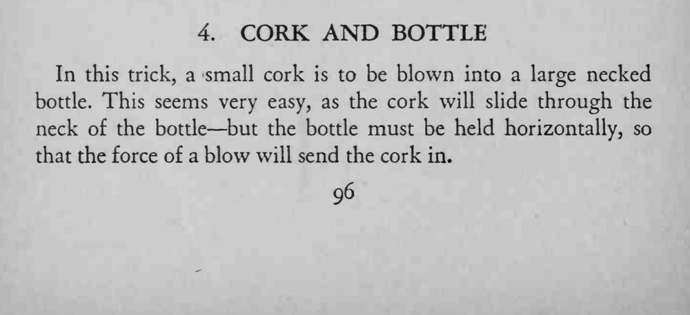
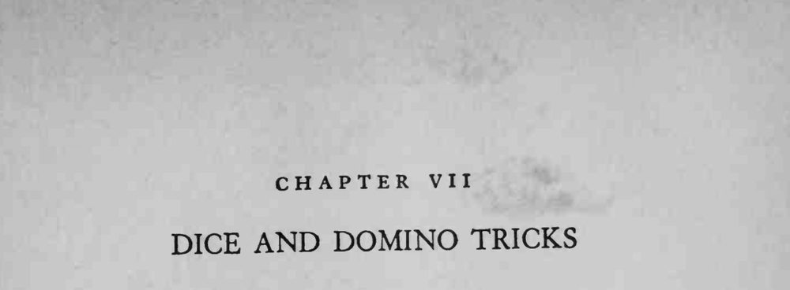

小软木塞被一口气吹进了大瓶口的瓶子里。
瓶子必须横持，气流方向才与小软木塞一致，否则永远吹不进去。


In this trick, a small cork is to be blown into a large necked bottle. This seems very easy, as the cork will slide through the neck of the bottle but the bottle must be held horizontally, so that the force of a blow will send the cork in.